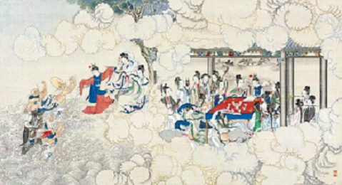
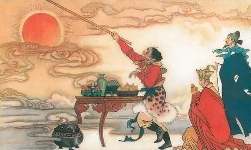
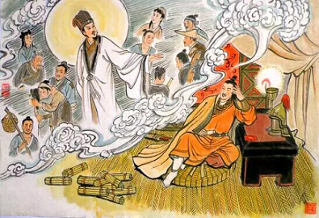
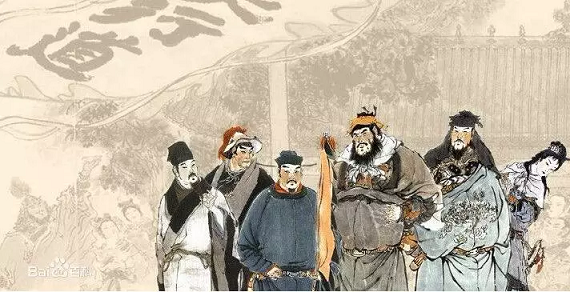

读红楼，过情关，风月情长，终究梦一场。
《红楼梦》一书大旨谈情，爱情亲情友情，纵情痴情，人情世情，构成情天恨海。最为动人的是爱情。宝黛的爱情拨人心弦，宝黛有缘无份，宝钗宝玉有份无缘，宝玉与妙玉、袭人无缘无份……千般滋味，万种纠结，恰如人生，又恰如一梦。又正因为是梦，所以投入后，须看破、放下。
当如今人心恰恰不够暖，情意恰恰不够浓时。不妨从红楼中学着深情一些，至少人生还能多一些美好和回味，少一些平庸与乏味。

读西游，过欲关，始于慈悲，终于觉悟。
一部“悟书”。一个佛家的故事，出自一个取经的典故。主角叫“悟空”。一悟，就是九九八十一难。师徒五人，如佛家讲人的“五毒”心：贪、嗔、痴、慢、疑。误会悟空的三藏是“疑”；傲慢不羁的悟空是“慢”；好吃懒做、贪恋女色的八戒是“贪”；曾吃人的沙和尚难保心底无“嗔”；默默执著向前的白龙马是“痴”。而悟空纵使十万八千里的筋斗，也逃不出如来的手掌，这是宿命。这破除与圆满之路，就在八十一难的历练里，正如人生。
欲望因执念而生，执念因欲望而固。人最难战胜的就是自己，最该用心的也是自己……有人看到了，于是觉醒；有人看不到，于是执迷不悟。

读三国，过争关 。心机，天机，契机，人到底争个什么？
三国是一部英雄之书，它的关键词，是阴谋阳谋、尔虞我诈、乱世、寂寞……归结为一个字，就是“争”。曹操一世枭雄，一世功业在身后也终被老谋深算、隐忍等待的司马懿家族窃取。刘备从草莽之中崛起，争得三足鼎立中一方诸侯，最终也只是在白帝城托孤，抱憾离世。诸葛孔明神机妙算、运筹帷幄，一力孤擎蜀汉，七次北上伐魏，终究也不过一场秋风五丈原的凄凉。
人到底争个什么？这可能就是三国最深邃的命题。

读水浒，过利关。尘归尘，土归土，我们的仗义去哪了？
什么是仗义？仗义，是鲁智深看不得萍水相逢的父女被人欺负，怒而拳打镇关西。是武松在朋友被欺凌后，快活林里醉打蒋门神；是黑旋风李逵为救宋江，只身江州劫法场；以为宋江抢了酒家女儿，即使是大哥也要大闹梁山忠义堂……他们看不得不平，肠子直得厉害，热得烫人。他们的心，纯粹而坦荡，光明磊落，一身正气。而这些正是情义、人情味，它的对立面是利益。
当下社会与水浒梁山、我们与好汉的距离，也许正是“情义”和“利益”之间的距离.佛家有言：《楞严》不灭，佛法不灭。只要水浒还在，仗义的种子就可以一代代播种、生根、发芽。